مساحة نقاش مسار
مساحة شبابية للحوار حول قضايا وأفكار تهمّ الشباب وتمسّ حياتهم ومجتمعهم. تتيح للمشاركين مشاركة وجهات نظرهم وتجاربهم، والتعرّف إلى طرق مختلفة في فهم الموضوع نفسه.
مبادرة شبابية سورية تدعم الشباب من 13 إلى 20 عاماً عبر التعلّم والتعبير والتعاون وإتاحة الفرص. تعرّف إلى مسارات مَسار ومشاريعها وبرامجها.
مَسار مبادرة شبابية سورية تدعم الشباب من خلال التعلّم والتعبير والتعاون وإتاحة الفرص. وتمنحهم مساحة لمشاركة الأفكار واكتساب الخبرات وبناء مهاراتهم.
تستهدف مَسار الشباب من 13 إلى 20 عاماً، وتضم خمسة مسارات للتطوّر، إلى جانب مشاريع وبرامج منفصلة عنها.
نؤمن بأن الشباب شركاء في بناء مستقبلهم، لا متلقّون للمعلومة فقط. لذلك تتيح مَسار مساحة آمنة للحوار والتجربة وتبادل الأفكار، وتشجّع كل مشارك على تحويل اهتماماته إلى خطوات عملية.
تجمع المبادرة بين مسارات تنمّي المهارات ومشاريع وبرامج تفتح أبواباً للتواصل والوصول إلى الموارد. ويمكن لكل شاب أن يبدأ من المجال الأقرب إليه، ويتعلّم بالتدرّج ضمن مجتمع يشجّع التعاون والمبادرة.
تعرّف إلى المسارات الخمسة التي تتيح للشباب مجالات متنوعة للتعلّم والمشاركة.
لقاءات أسبوعية في الأمن السيبراني والذكاء الاصطناعي والبرمجة، مع تمارين تطبيقية بعد كل لقاء، ونظام مستويات للتحفيز والمنافسة الفعالة بينهم من Junior إلى Master.
قضية اجتماعية أو نفسية جديدة كل أسبوع، يقترح المشاركون حلولها، وتُختار أفضل الأفكار لتُناقش وتُنشر.
لغة الجسد، فن الإقناع، والإلقاء، عبر تمارين تمثيل شخصيات ومناظرات بسيطة تُقام أونلاين.
شارك حلمك عبر استمارة بسيطة، ونربطك بأشخاص يشاركونك الاهتمام نفسه ومرشدين يساعدونك على خطوتك الأولى.
تحدي رسم أسبوعي يختار فيه المشاركون أنفسهم الفائز، مع ترتيب شهري ومحتوى ملهم عن فنانين عظماء.
كل مشاركة تُحسب: نقطة على المشاركة، خمس نقاط على كل تحدٍ مكتمل، وثلاث نقاط على مساعدة الآخرين. تتراكم النقاط لتنقلك عبر خمس مراحل من التطور.
تعرّف إلى مشاريع وبرامج مَسار في هذا القسم المستقل عن مساراتها الخمسة.
مساحة شبابية للحوار حول قضايا وأفكار تهمّ الشباب وتمسّ حياتهم ومجتمعهم. تتيح للمشاركين مشاركة وجهات نظرهم وتجاربهم، والتعرّف إلى طرق مختلفة في فهم الموضوع نفسه.
تجمع المنصة فرصاً تعليمية وتطوعية وموارد من مصادر متنوعة، مثل المنح والدورات ومقاطع الفيديو والمقالات والفرص التطوعية. تشمل مجالاتها التقنية (البرمجة وتصميم الويب والأمن السيبراني والذكاء الاصطناعي)، والعمل المجتمعي والإبداع، مع إتاحة مجالات أخرى. لا تُنظّم مبادرة مسار كل الفرص والموارد المعروضة، ولا تضمنها؛ فهي واردة من مصادر مختلفة.
فريق من الشباب السوري، عاش نفس التحديات، وقرر أن يحوّلها إلى مساحة لغيره.
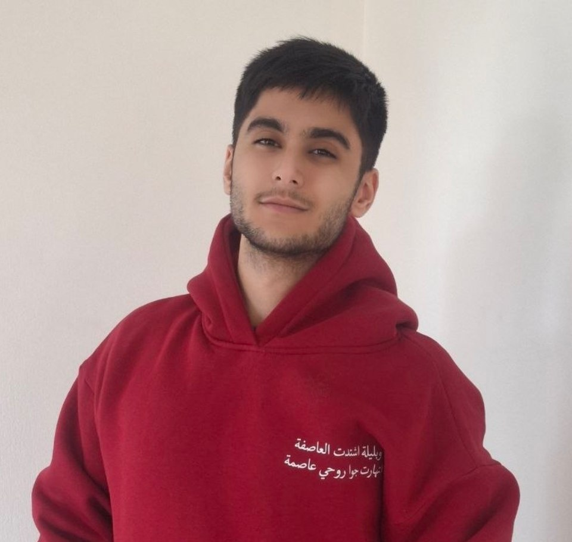
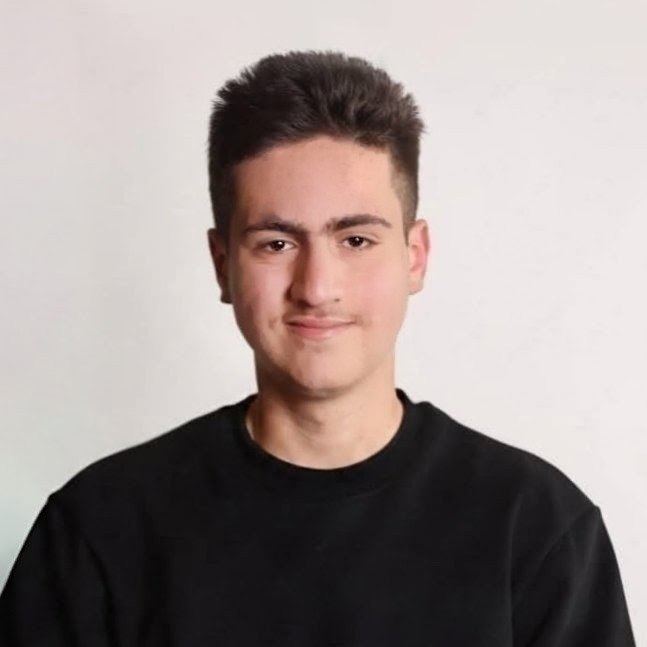
متطوعون يساهمون بوقتهم وأفكارهم في بناء مساحة شبابية للتعلّم والتعاون. نعرض صور من توفرت صورهم، وتظهر أيقونة افتراضية عند عدم توفر صورة.
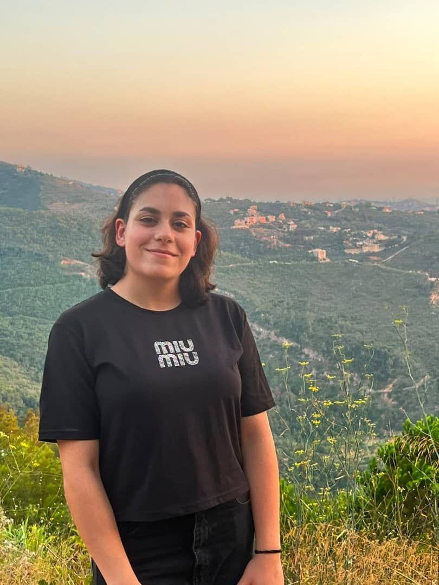
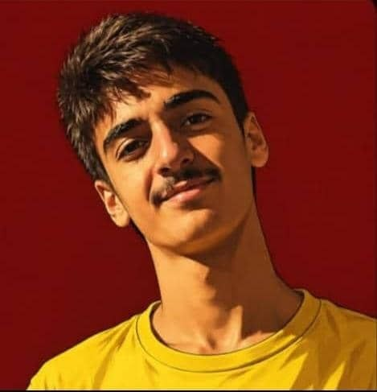
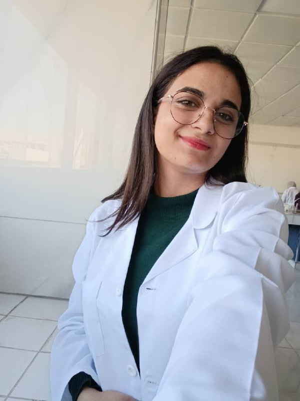
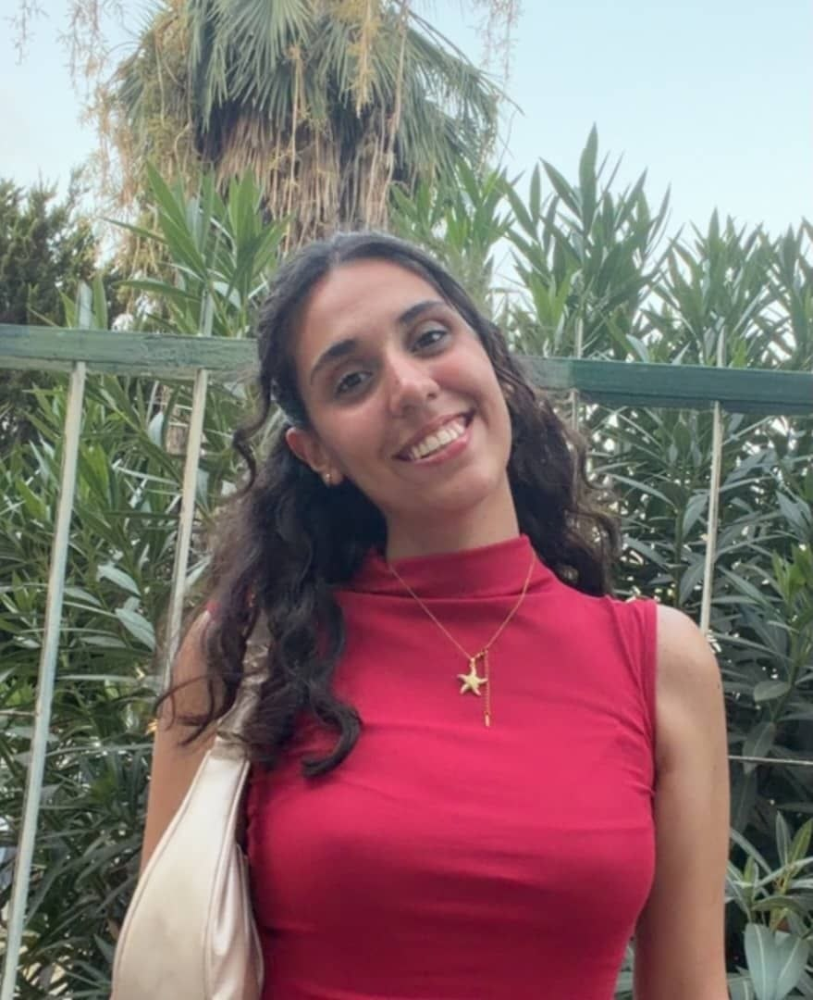
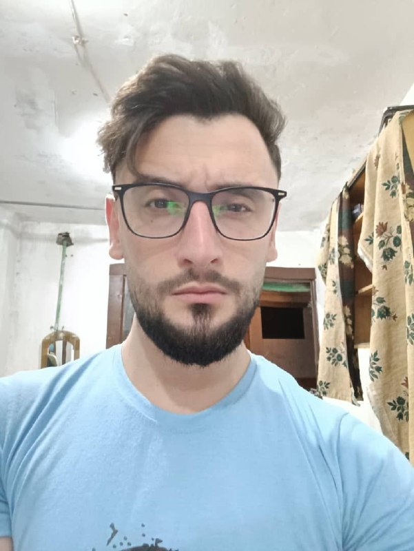
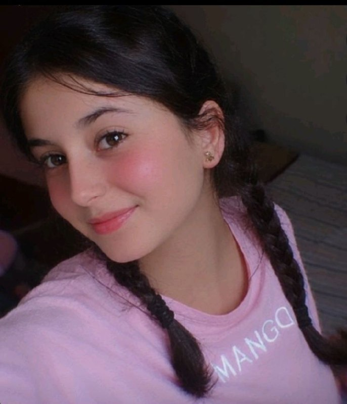
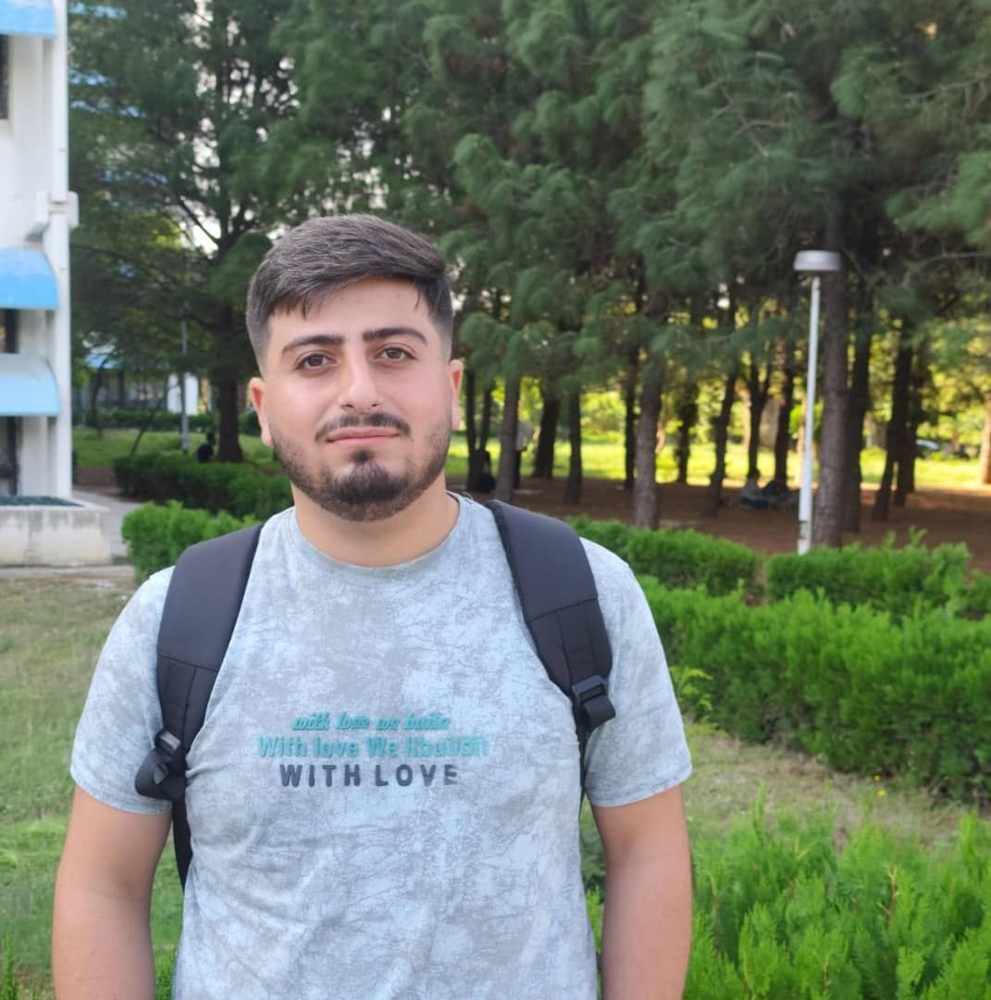
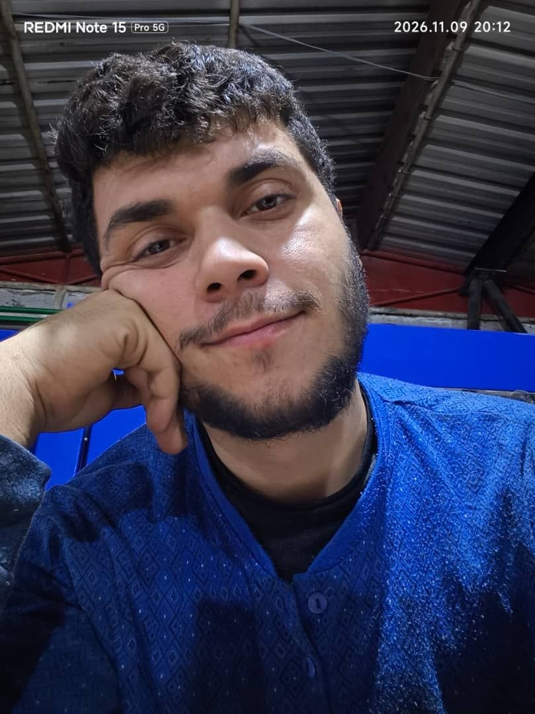
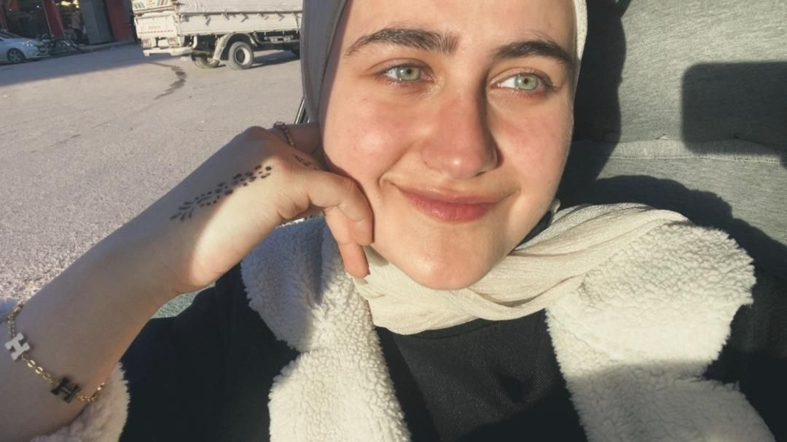
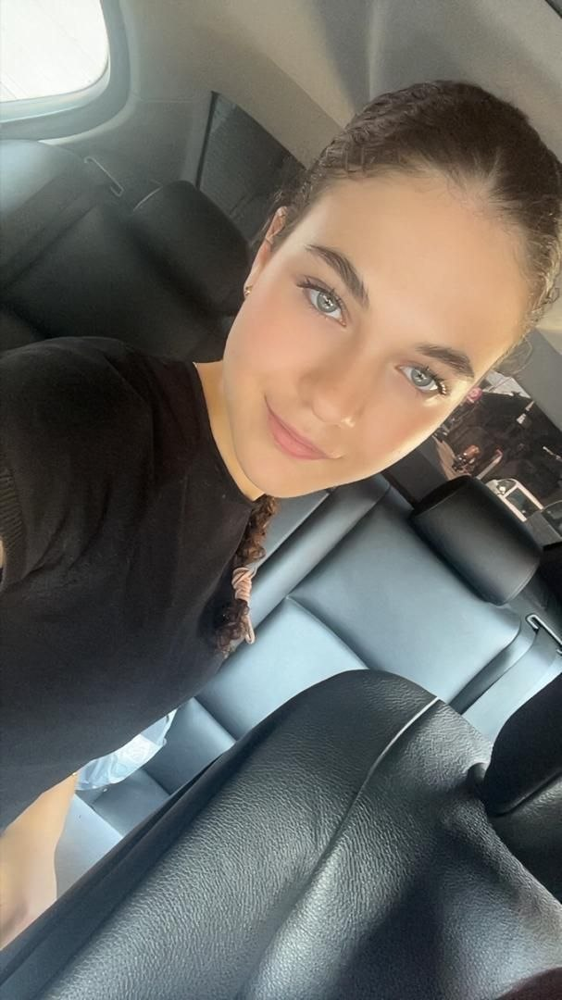
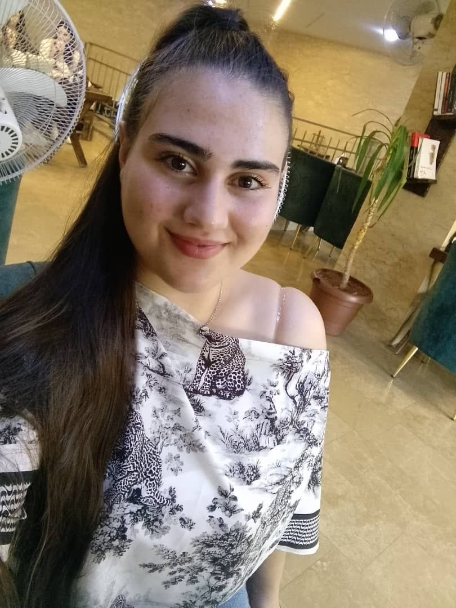
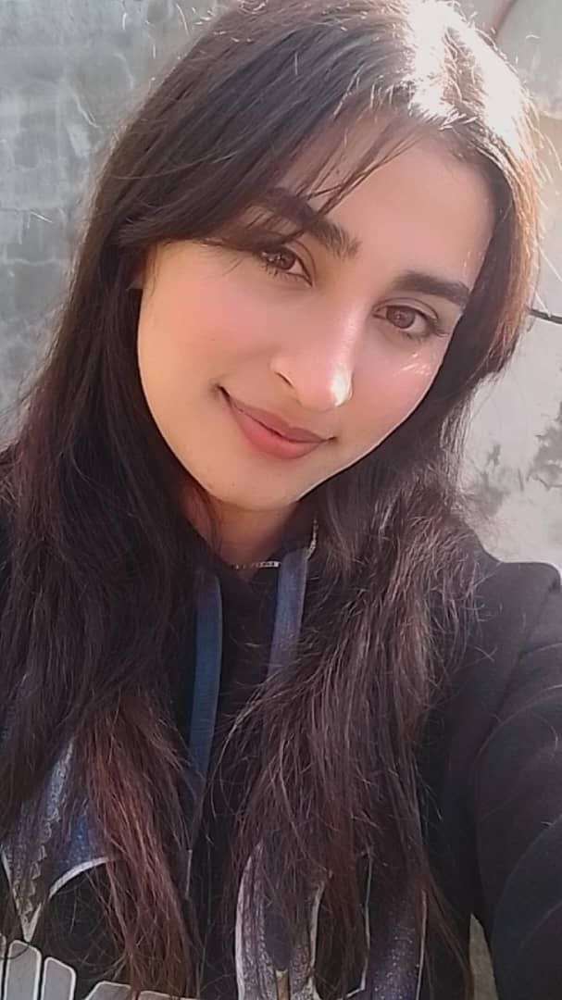
البقاء بوطنك ممكن يستاهل العناء. بلش بمسارك اليوم، وسط ناس بتسمعك.
انضم إلى مجتمع مَسار على واتساب